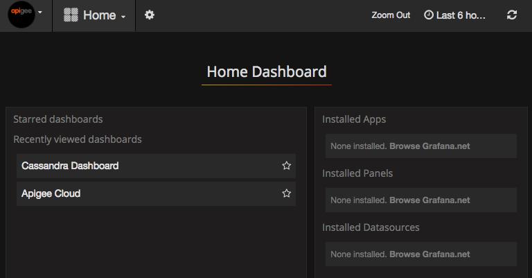
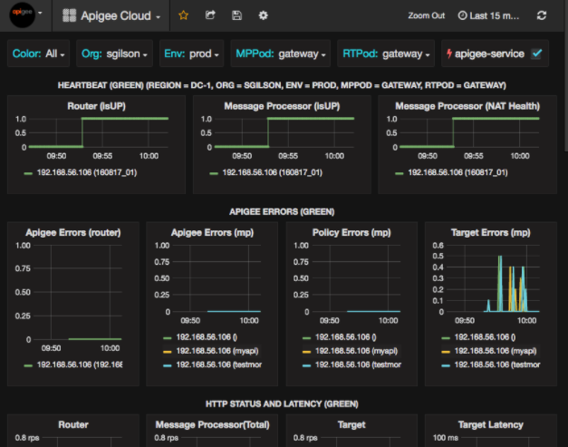
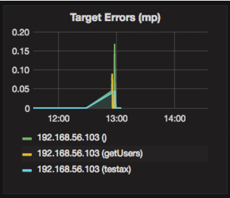

Edge for Private Cloud v. 4.18.01
The Beta release of the Edge monitoring dashboard helps you understand the health of various components (Routers, Message Processors, ZooKeeper, Cassandra) as well as HTTP error codes for various orgs and environments in your deployment. You can also snapshot these details and share them with Apigee if required for resolving support incidents.
Before you can install and use the Apigee Monitoring Dashboard, you must complete the Apigee Monitoring Dashboard Evaluation Agreement (PDF - right-click the link and select Save Link As) and return it to Apigee by emailing it to orders@apigee.com.
After installing the dashboard, access it by opening the following URL in a browser:
http://grafana_IP_or_DNS:3000
where grafana_IP_or_DNS is the IP or DNS name of the node running the Apigee apigee-grafana component. You will be prompted to enter the administrator's username:password as defined when you installed apigee-grafana. The default values from the installation instructions below are admin:admin.
After you log in, you see the following screen:

Select the logo in the upper-left corner to open the menu bar. In the menu bar, select Pin to keep the bar open.
In the menu bar, select:
After selecting Dashboards > Home, selecting Apigee Cloud opens the dashboard display shown below:

On this screen, you can see information about the:
Notice the buttons across the top of the charts:
Some of the charts show information for individual API proxies and all API proxies together. For example, in the chart below, you can see a line for all proxies, identified by the green line for 192.168.56.103(), the IP address of the Message Processor:

There are also individual lines in the chart for different API proxies named getUsers and testAX, identified in the chart as the orange line for 192.168.56.103(getUsers) and the blue line for 192.168.56.103(testax).
By default, the dashboard shows information for the last 5 minutes. Select the Today at the top-right of the dashboard to select a different interval.
To help Apigee diagnose and debug an issue, you can send a snapshot of your dashboard to Apigee Support. Apigee can then inspect your dashboard to help determine the cause of the issue.
To send a dashboard snapshot to Apigee:
The dashboard relies on several components that you install after installing Edge: